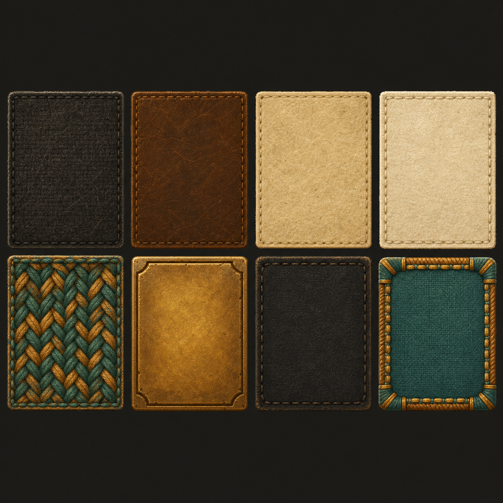
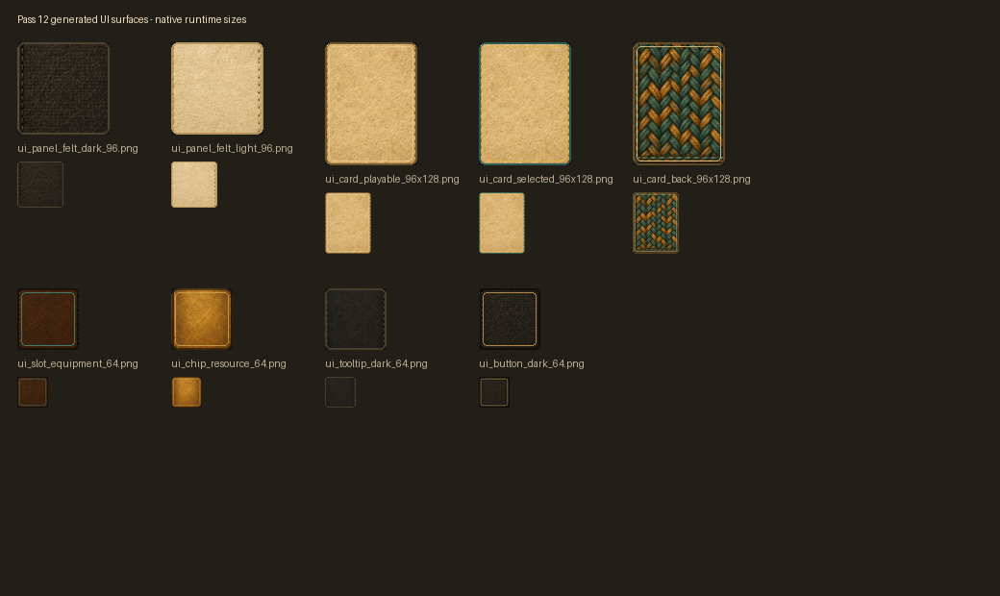
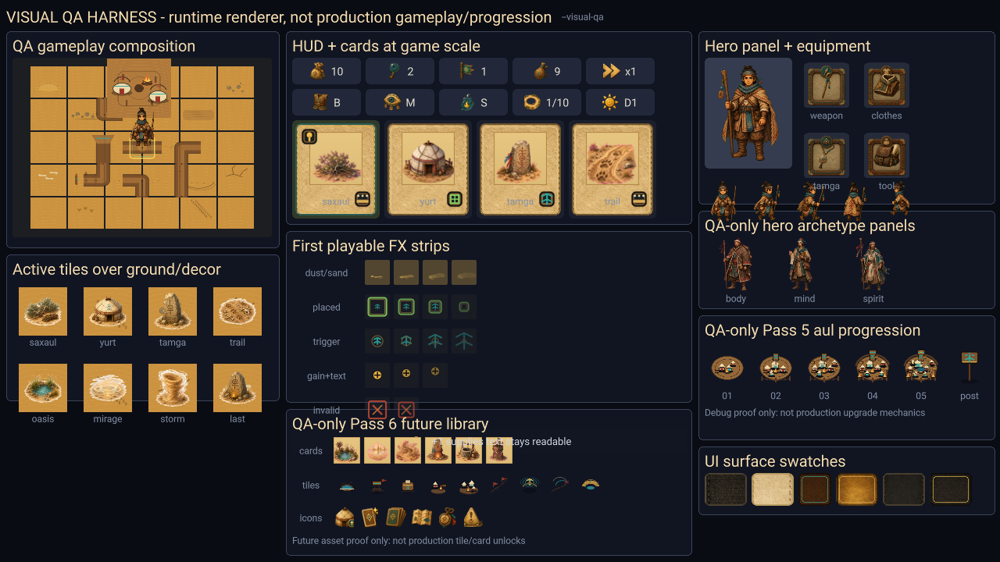

“Песок стирает следы.” → “Путь ждет первого путника.” → “Отправиться в путь.”
Loop Hero x кочевой род
Аул в центре. Дорога вокруг. Пустыня как поле решений.
Герой идет сам по кольцевой дороге. Игрок занимает ближние и дальние ячейки пустыни тайлами: Саксаулами, юртами, бурями, волчьими следами, Оазисами и камнями Тамги.
Один герой должен пройти путь, но за его спиной стоят все, кто погиб до него.
О
Б
ВАул
Т
аул
дорога
пустыня
Тамга
После ревью документов
Актуально сейчас
Тайлы игрока сохраняют смысл внутри забега. Дорога не должна ломать причинность карт каждый круг.
Road buffer, field build, подсветка зон, invalid feedback, затем log.tsv, камера и battle bubble.
Короткий контракт: gamedesign/docs/28_current_source_of_truth.md. Старые спорящие заметки считаются устаревшими.
Что делает игрок
Выбирает наследника, ставит тайлы в roadside/field-зоны, решает риск ради ресурсов.
Что делает герой
Автоматически проходит круг, активирует клетки, теряет или копит Силы.
Что делает смерть
Оставляет Последнюю Тамгу, новую цель для следующего наследника.
Коротко по слоям
От общего к частному
Постоянный центр, род, апгрейды, память.
Кольцо вокруг аула. Герой идет сам, длина может расти по кругам.
Свободные build slots. Игрок занимает их картами.
След смерти. Будущий герой может забрать знание.
Мок-скриншоты
Как должны читаться состояния
Круг 3/10Силы 7
Проход круга
Герой движется, игрок считывает следующий риск.
Выбор карты3 варианта
ОазисКамень ТамгиБуря
Между кругами
Короткое решение: безопасность, память или риск.
СмертьКруг 6
Т
Последняя Тамга
Смерть превращается в цель на следующем забеге.
Референсы
Что берем и что не берем
Loop Hero
Берем автодвижение, круг, тайлы вокруг пути и ритм выбора после круга.
Кочевой аул
Берем центр карты, юрты, костер, род и постоянную память.
Тамга
Берем знак как визуальный язык: память, смерть, знание, наследие.
Не берем
Не уходим в арабские дворцы, лампы, базары и декоративный шум.
Зафиксировано как core MVP
Герой идет сам. Игрок помогает через карты, пустыню и аул.
Игрок не управляет шагами и боем. Он получает карты, занимает ближние и дальние ячейки пустыни, дозирует риск и после смерти героя усиливает аул, чтобы следующий наследник прошел дальше.
Это не idle-наблюдение: каждая карта меняет будущий проход по кругу.
Аул
память рода
1
Выбрать наследника
2
Герой идет сам
3
Находит ресурсы и карты
4
Игрок ставит карты
5
Путь богаче и опаснее
6
Смерть или новый круг
Ревью решения
Можно фиксировать, но с точной границей
Ок
Loop понятный: герой автономен, игрок меняет мир, смерть кормит аул, новый герой использует наследие прошлого.
Риск
Если карты будут редкими, игрок будет просто смотреть. Нужно действие каждые 5-20 секунд: карта, постановка, оценка риска или выбор после круга.
Правило MVP
Простые клетки срабатывают автоматически. Пауза только для карты, постановки тайла, конца круга, смерти и крупного события.
Что делает игрок
Активность без прямого управления героем
Получает карты
После круга гарантированно, во время пути редко через события и проверки.
Ставит в пустыню
Занимает ячейки рядом с дорогой, чтобы изменить будущие проходы.
Дозирует риск
Безопасный путь дает мало. Опасные тайлы дают Славу, Мудрость и карты.
Прокачивает аул
После смерти часть результата идет в род и помогает следующему наследнику.
Playable loop
Первый реализуемый цикл
Старт: наследник выходит из аула, входит на loop-дорогу и идет автоматически.
Путь: клетки дают ресурсы, проверки, потерю/восстановление Сил и шанс карты.
Карты: игрок ставит Саксаул, Юрту, Камень Тамги, Оазис или рискованные следы.
Круг: после возвращения в аул игрок выбирает 1 карту из 3.
Смерть: герой оставляет Последнюю Тамгу, часть ресурсов уходит в аул.
Род: игрок улучшает аул и запускает нового наследника.
Loop Hero reference
Карта не кнопка. Карта становится частью мира.
В Loop Hero карты ставятся на дорогу, рядом с дорогой или в ландшафт. Часть действует постоянно, часть срабатывает при прохождении, часть создает врагов по времени, а часть превращается в новый тайл через соседство.
Для нас карта = след в пустыне, который меняет будущий проход путника.
Типы карт
Что берем из Loop Hero, но расширяем под большой мир
Road
Карта меняет клетку пути. У нас: событие на дороге путника.
Roadside
Ближняя карта за road buffer. Работает при проходе связанной дорожной клетки.
Field
Дальний тайл большого мира. Не обязан стоять рядом с дорогой: радиус, доход за круг, аура, синергия.
Special
Разовое удаление, реликт, песнь, особая Тамга или знак рода.
Tile catalog
Первый набор тайлов
Саксаул
Первая карта. Маленькая помощь: тень и хворост. Силы +1, Запасы +1.
Оазис
Сильная находка, не стартовая карта. Восстановление и Запасы, база для стоянок.
Юрта
Стоянка рода. Доход за круг, экономика, синергии с Саксаулом, Оазисом и Тамгой.
Камень Тамги
Память и Мудрость. Работает как знак в пустыне, усиливает наследие и события памяти.
Звериная тропа
Ближний риск на маршруте. Игрок ставит опасную тропу, а на дороге проявляется волчий след: Body-проверка, Слава за риск.
Мираж
Дальняя Mind-аура. Искажает награды, дает знание и риск не прямо на дороге.
Песчаная буря
Зональная Spirit-угроза. Может накрывать несколько тайлов и превращать помощь в риск.
Narrative baseline
Тексты P0 для карт и событий
Тень и хворост у пути. Силы +1. Запасы +1.
Малая стоянка в пустыне. Запасы аула +2 за круг.
Знак памяти в песке. Мудрость +2.
Опасный след у дороги. Проверка Body. Слава +2. Волчий след показываем как маркер срабатывания, а не как название карты.
Рабочий источник текстов: gamedesign/docs/30_narrative_content_baseline.md
Первые синергии
Делаем похоже по функции, но в нашей теме
Саксаул + ЮртаМалая стоянка: немного Запасов и Силы.
Оазис + ЮртаСтоянка: больше Запасов и восстановление.
Камень Тамги + ЮртаРодовой знак: Мудрость и шанс карты памяти.
Звериная тропа + Сторожевая вышкаОхотничья тропа: Слава, ниже потеря Сил.
Мираж + Камень ТамгиВидение: Mind-риск, шанс редкой карты.
Песчаная буря + ОазисЗасыпанный источник: опасность Spirit, большая награда.
2 Звериные тропы рядомСтая: плохая синергия от жадности.
Песок стирает следы. Путь ждет первого путника.
Первый опыт игрока
Сначала доказываем один кусок: герой вышел, Саксаул поставлен, эффект сработал позже.
Текущий фокус FTUE - Segment A-B. Не учим всю игру сразу. Сначала игрок должен без объяснений понять: герой из аула, идет сам, игрок ставит знак в пустыне, знак помогает на будущем проходе.
Пока этот кусок не читается, не расширяем FTUE на выбор из 3, риск, смерть и Тамгу.
Current FTUE decision
Работаем по шагам: сначала Segment A-B
Доказать первый интерактив
Игрок видит выход из аула, автодвижение, получает Саксаул, ставит его в видимый roadside-слот и позже видит эффект. Это главный тест FTUE.
Не грузим системами
Не объясняем field, синергии, прокачку аула, реликты и полную смерть до того, как понятна причинность карты.
Игрок говорит сам
“Герой идет сам. Я ставлю знак рядом с дорогой. Он помогает, когда герой вернется к этой клетке.”
Discussion steps
Обсуждаем и делаем последовательно
Segment A-B
Выход из аула, автодвижение, первый ресурс, карта Саксаул, постановка, отложенный эффект.
Статус: делаем сейчасПервый выбор
Юрта / Камень Тамги / Звериная тропа. Разные роли и разные placement-зоны.
Статус: после проверки A-BРиск второго круга
Показать угрозу так, чтобы безопасный выбор не ощущался отмененным.
Статус: следующий дизайн-разборТамга и наследник
Смерть/почти смерть, результат забега, новый герой, подбор Тамги прошлого.
Статус: финал FTUE MVPSegment A-B storyboard
Первый кусок, который нужно сделать понятным
1. Игрок готовит путь
Над аулом появляется палец и подпись. Игрок нажимает костер/аул, чтобы отправиться в путь.
Цель: подтвердить готовность, не управлять путником.2. Герой идет сам
2-3 клетки без input. Ресурс появляется как обычное событие, без паузы.
Цель: понять автодвижение.3. Игрок ставит
Подсвечен только видимый roadside-слот. Road и buffer не активны.
Цель: поставить Саксаул без скролла.4. Помог позже
Герой дошел до связанной клетки, линия вспыхнула, Саксаул дал помощь.
Цель: увидеть причинность.Старый скелет
От интро к первому решению
Темный экран
1-2 строки рассказчика: род заперт в кольце пустыни.
Появляется пустыня
Медленный fade-in: песок, ветер, почти пустой экран.
Появляется аул
В центре загорается костер, вокруг него 2-3 юрты.
Выходит путник
Первый наследник отходит от костра: игрок видит, что герой вышел из аула.
Вход на дорогу
Путник проходит короткий переход и встает на первую клетку loop.
Первый круг
Герой идет автоматически. Игрок пока только наблюдает ритм.
Первая карта
Игра ставит паузу и предлагает занять первую пустынную ячейку.
Ключевой вопрос
Выбираем ли мы события во время пути?
Рекомендуемая модель
Герой идет сам. Большинство клеток срабатывает автоматически. Игра останавливается только на точках решения: найденная карта, выбор места для тайла, завершение круга, смерть, редкое крупное событие.
Почему не выбор на каждой клетке
Постоянные диалоги ломают Loop Hero-ритм. Игрок должен читать маршрут и планировать, а не подтверждать каждый шаг.
Где нужен выбор
Выбор нужен там, где меняется билд: какую карту взять, куда поставить тайл, какой апгрейд выбрать, какой реликт сохранить.
Production detail archive
Подробные карточки сценария ниже, но текущий фокус - Segment A-B
0100:00
Темный экран: песнь рода
Игра начинается без меню систем. Сначала только черный экран, ветер, две короткие строки и ощущение, что род держится за память.
Финальный текст: “Песок стирает следы.” → “Путь ждет первого путника.”
Арт: почти черный экран, редкие светлые частицы песка, без UI, без карты, без героя.
Анимация: строка появляется за 0.6 сек, держится 1.4 сек, растворяется; песок движется слева направо.
Игрок: может нажать `Space`/клик, чтобы пропустить. Других действий нет.
Лог: эти же две строки добавляются в чат после появления карты.
Готово: через 4-6 сек или после пропуска перейти к появлению пустыни.
0200:20
Появляется стойбище рода
Камера открывает карту. В центре маленький аул: костер, 2-3 юрты, вокруг дорога-loop, за дорогой живая пустыня без пустых клеток.
Финальный текст в логе: “Путь ждет первого путника.”
Арт: теплый костер в центре, юрты с тканью и деревянными стойками, песок с камнями, травой, следами, сухими ветками.
Правило уровня: не занятый слот не выглядит пустым. Это “дюна”, “камни”, “сухая трава”, “следы”, “кость”, “бархан”.
Анимация: fade-in карты 1 сек; костер мерцает; мелкий песок движется по всем клеткам.
Камера: центр на ауле, видны вход на дорогу и несколько клеток пустыни для будущих карт.
Готово: игрок за 2-3 сек понимает: аул = дом, дорога = путь, пустыня = поле решений.
0300:40
Первый путник выходит из аула
Герой не появляется сразу на дороге. Он выходит от костра, проходит короткий путь через аул и становится на первую дорожную клетку.
Финальный текст: “Первый путник выходит из аула.”
Арт: маленькая фигурка в простой дорожной одежде, тюбетейка/капюшон, мешок за плечом, теплый свет костра позади.
Анимация: 6-8 шагов от костра к дороге; за героем на 1 сек остаются следы, потом песок их стирает.
Игрок: не управляет. Это обучение через сцену: герой сам идет из дома к пути.
Техсостояния: `aul_exit -> road_entry -> loop_walk`.
Готово: герой достиг `road_entry_cell`, круг 1 стартует.
0401:00
Первые клетки: герой идет сам
Путник проходит 2-3 дорожные клетки без выбора. Игрок должен понять: он не двигает героя, он меняет мир вокруг будущего маршрута.
Финальный текст: “Круг 1 начат.” → “Путь ведет его сам.”
Арт уровня: каждая дорожная клетка имеет деталь: трещины, колеи, пыль, мелкие камни. Вокруг нет плоского пустого песка.
Анимация: герой идет по клеткам, камера мягко следует или держит аул и путь в кадре; текущая клетка слегка подсвечена.
UI: справа панель героя, слева чат-лог, снизу рука карт пока неактивна.
Игрок: не кликает по клеткам и не управляет WASD.
Готово: после 2-3 клеток срабатывает первый ресурс.
0501:30
Первый ресурс на дороге
На дорожной клетке герой сам находит первый ресурс. Это маленькое событие, но оно показывает, что мир постоянно что-то сообщает игроку.
Финальный текст: чат: “Путь дает роду: Запасы +1.”
Арт: маленький мешок/связка припасов у края дороги, не как UI-иконка, а как предмет на земле.
Анимация: pop-up “+1” над клеткой 0.8 сек; мешок растворяется в песке; HUD “Запасы” коротко подсвечивается.
Игрок: ничего не нажимает. Паузы нет.
Данные: `run_supplies += 1`.
Готово: HUD и чат обновлены, герой продолжает движение.
0602:00
Герой находит карту “Саксаул”
Первый настоящий интерактив. Герой находит маленькую карту помощи, игра ставит паузу, карта появляется в руке снизу, а допустимые клетки подсвечиваются.
Финальный текст: “Песок открывает знак: Саксаул.”
Арт карты: низкий темный куст, сухие ветви, тень на песке. Это обычная помощь, не чудо и не редкий Оазис.
Анимация: карта выезжает снизу в руку; допустимые buildable-клетки за road buffer пульсируют бирюзовым контуром.
Игрок: выбирает карту и кликает по подсвеченной buildable-клетке.
Правило уровня: подсвечивается не “пустая” клетка, а декоративная пустынная клетка, которую можно занять.
Готово: выбран допустимый `roadside` слот за кромкой дороги; перейти к постановке.
0702:30
Игрок ставит Саксаул
Игрок занимает buildable-клетку за кромкой дороги. Это первое главное действие: не приказ герою, а подготовка будущего прохода.
Финальный текст: “В песке цепляется корнями Саксаул.”
Арт на поле: сухой куст, 2-3 ветки, маленькая тень, песок вокруг корней. Ячейка явно занята тайлом.
Анимация: карта летит в слот 0.35 сек; песок поднимается; из него проявляется куст; связанная дорожная клетка мигает.
Игрок: после постановки управление картой закрывается, игра снимает паузу.
Данные: `tile_id=saxaul`, `placement=roadside`, связь с ближайшей дорожной клеткой.
Готово: карта исчезла из руки, Саксаул стоит, герой снова идет.
0803:20
Саксаул срабатывает позже
Эффект не происходит в момент клика. Герой доходит до связанной клетки, и только тогда Саксаул помогает. Игрок понимает “ставлю сейчас, польза позже”.
Финальный текст: “Саксаул: путник находит тень и хворост. Силы +1. Запасы +1.”
Арт: куст дает маленькую тень; рядом сухие ветки как топливо/припасы.
Анимация: линия связи от Саксаула к дороге 0.5 сек; pop-up “Силы +1”; HUD Сил подсвечивается.
Игрок: ничего не нажимает, но видит последствия своего прошлого решения.
Данные: `stamina += 1`, `run_supplies += 1`.
Готово: эффект применен один раз на проходе, герой продолжает круг.
0904:30
Первый круг завершен у аула
Герой возвращается к аулу. Теперь игрок видел полный мини-цикл: вышел из дома, пошел сам, получил карту, поставил тайл, увидел эффект позже.
Финальный текст: “Круг 1 завершен. Аул снова впереди.”
Арт: камера снова показывает аул как точку возврата; костер заметнее, чем в начале.
Анимация: герой входит к аулу, экран мягко притормаживает, три карты поднимаются снизу.
Игрок: выбирает 1 из 3: `Юрта` безопасность, `Камень Тамги` память, `Звериная тропа` риск/слава.
Placement: Юрта/Камень Тамги подсвечивают `field`, Звериная тропа подсвечивает `roadside` за road buffer.
UI: выбор карт крупный, с коротким описанием результата и зоны постановки на каждой карте.
Готово: выбранная карта добавлена в руку; начинается второй круг.
FTUE analysis
Учим по одному слою, иначе игрок теряет причинность
Первые 3 минуты
Учим только: аул, герой идет сам, карта Саксаул, valid roadside slot, отложенный эффект. `field`, смерть и аул-экономику пока не объясняем.
Перегруз системами
Если одновременно объяснить road buffer, roadside, field, лог, смерть, Тамгу и наследников, игрок запомнит шум, а не loop.
Одна цель на экран
В каждый момент есть одна короткая задача: выбрать Саксаул, поставить в подсветку, дождаться эффекта, выбрать карту после круга.
Ошибки без модалок
Клик по дороге или buffer дает маленький bubble у клетки: “Кромка пути: строить нельзя.” Игра не ломает поток.
Teaching budget
Что учим и что не трогаем по фазам
Учим: аул, герой, автодвижение.
Фоном: дорога и пустыня.
Не учим: карты, field, смерть.
Учим: Саксаул, roadside, эффект позже.
Фоном: road buffer как запрет.
Не учим: выбор из 3, риск, field.
Учим: безопасность, память, риск.
Фоном: большой field и скролл.
Не учим: синергии и экономику аула.
Учим: проверка, Тамга, новый наследник.
Фоном: сохранение ресурсов в аул.
Не учим: полное дерево меты.
Placement teaching
Первый Саксаул без скролла, field раскрываем позже
1. Выбран Саксаул
Подсвечены только ближние `roadside_build`. Дорога и buffer затемнены. Игрок не обязан двигать камеру.
2. Клик по buffer
Ошибка объясняется bubble рядом с клеткой, без модалки и без сброса выбранной карты.
3. После первого круга
Юрта и Камень Тамги раскрывают `field_build`: камера чуть отъезжает, и игрок видит большой мир со скроллом.
Production script
FTUE как состояния для реализации
Дом и путь
0:00-1:00
ftue_00_boot
Видим: черный экран и песок.
Текст: “Песок стирает следы.”
Выход: 1.8 сек или skip.
ftue_01_campfire_line
Текст: “Путь ждет первого путника.”
UI: все скрыто, без меню правил.
Выход: fade к пустыне.
ftue_02_desert_reveal
Видим: живой песок, decor cells.
Правило: пустых клеток нет.
Выход: карта читаема.
ftue_03_aul_reveal
Видим: аул, костер, 2-3 юрты.
Лог: “Путь ждет первого путника.”
Данные: создать героя.
ftue_04_aul_exit
Анимация: первый путник выходит от костра к дороге.
Лог: “Первый путник выходит из аула.”
Важно: герой не появляется сразу на дороге.
Первое влияние
1:00-3:30
ftue_05_road_entry
Видим: герой на первой road-cell.
Лог: “Круг 1 начат.”
Данные: `circle = 1`.
ftue_06_autowalk_hint
Игрок: ничего не нажимает.
Лог: “Путь ведет его сам.”
Смысл: герой идет сам.
ftue_07_first_resource
Событие: Запасы +1.
Пауза: нет.
Данные: `run_supplies += 1`.
ftue_08_card_saxaul_found
Пауза: да.
Рука: одна карта `Саксаул`.
Лог: “Песок открывает знак: Саксаул.”
ftue_09_saxaul_place_prompt
Подсветка: только `roadside_build`.
Запрет: `road_path` и `road_buffer` затемнены.
Клик: только valid roadside slot.
ftue_10/11_saxaul
Поставил: куст появился, карта исчезла.
Позже: Силы +1, Запасы +1.
Смысл: польза приходит на будущем проходе.
Первый выбор
3:30-5:30
ftue_12_lap_1_complete
Видим: герой возвращается к аулу.
Лог: “Круг 1 завершен. Аул снова впереди.”
Пауза: да, но после строки лога.
ftue_13_first_choice_opened
Карты: Юрта / Камень Тамги / Звериная тропа.
Смысл: безопасность, память или риск.
UI: крупные карты, не таблица.
Юрта
Placement: `field_build`.
Текст: “Запасы +2 за стоянку.”
Обещание: безопасная экономика.
Камень Тамги
Placement: `field_build`.
Текст: “Мудрость +2.”
Обещание: память и синергии.
Звериная тропа
Placement: `roadside_build`.
Текст: “Риск Body, Слава +2.”
Обещание: опасность ради славы.
Риск и наследие
5:30-10:00
ftue_15_second_loop_start
Движение: герой снова идет сам.
Карта: поставленные тайлы остаются.
Лог: “Круг 2 начат.”
ftue_17_first_risk_reveal
Видим: песок темнеет впереди.
Лог: “Волчий след открыт на дороге.”
Важно: безопасный выбор не отменен, мир тоже опасен.
ftue_18_first_check_resolved
Успех: Слава +2.
Провал: Силы -2, часть Славы.
Бой: bubble над клеткой, без отдельной сцены.
ftue_19_death_or_near_death
Видим: герой остановлен, на песке Тамга.
Текст: “Путь окончен, но имя осталось.”
Данные: создать `last_tamga`.
ftue_20/21_result_heir
Результат: часть ресурсов уходит в аул.
Кнопка: “Новый наследник”.
Новый путник: снова выходит из аула.
ftue_22_last_tamga_pickup
Событие: новый герой подбирает Тамгу.
Лог: “Мудрость +1, Слава +1.”
Смысл: смерть прошлого стала целью нового.
Level rule
Пустых клеток на уровне быть не должно
Реф по ощущению: Capybara Go
Экран должен постоянно сообщать “что-то происходит”: маленькие находки, всплывающие числа, следы, микрособытия, понятный лог. Даже спокойная клетка не выглядит мертвой.
Свободная клетка ≠ пустая клетка
До постановки карты слот выглядит как декоративная пустыня: дюна, камни, сухая трава, следы, кости, трещины, обломки, пыльный куст. Карта заменяет декор на активный тайл.
Что просить у Code
Для каждой buildable-клетки хранить `base_decor_id`. Поверх него ставится `tile_id`. Если `tile_id` пустой, клетка все равно рисует декор и может быть подсвечена как доступная.
дюна
камни
сухая трава
следы
кости
трещины
World zones
Дорога в центре, большой мир со скроллом вокруг
field build
field build
field build
field build
road buffer
no-build
no-build
road buffer
no-build
no-build
road buffer
no-build
no-build
field build
road buffer
no-build
no-build
road path
hero
hero
road path
hero
hero
road buffer
no-build
no-build
field build
road buffer
no-build
no-build
road path
hero
hero
аул
no-build
no-build
road path
hero
hero
road buffer
no-build
no-build
field build
road buffer
no-build
no-build
road path
hero
hero
road path
hero
hero
road buffer
no-build
no-build
field build
roadside / field
roadside / field
field build
field build
Roadside
Ближние тайлы за кромкой дороги. Работают при проходе связанной дорожной клетки: Саксаул, Звериная тропа, малые находки.
Field
Дальние тайлы большого мира. Не обязаны стоять рядом с дорогой: Юрта, Камень Тамги, Мираж, Буря, будущие крупные постройки.
Road Buffer
Не строим. Это визуальная кромка и технический запас под дорогу, анимации, battle bubble и будущую генерацию изгибов.
Playable test
Что нужно проверить первым
Первый круг
Герой сам идет, получает ресурс, находит Саксаул, игрок ставит карту, Саксаул срабатывает.
Второй круг
Игрок выбирает карту из 3, ставит риск или полезный тайл, путь становится опаснее.
Смерть и новый герой
Герой умирает, остается Последняя Тамга, аул получает ресурсы, новый наследник выходит снова.
Acceptance: пройти 1-2 круга, поставить карту, увидеть эффект тайла, умереть, получить ресурс аула, запустить нового героя и подобрать Тамгу.
Developer plan
Цель: за 3-5 минут почувствовать геймплей.
План после ревью Code: не строим полный аул и не делаем большую экономику. Сначала доказываем, что core loop играется: карта в руке, постановка в пустыню, эффект на будущем проходе, риск, смерть, ресурсы аула и новый герой.
Готово только тогда, когда можно пройти 1-2 круга, умереть и сразу начать новым наследником.
Порядок реализации
От клика по карте до нового героя
1. Build-зоны: road buffer/no-build у дороги, ближние roadside-слоты и дальний field со скроллом.
2. Рука карт: гарантированный `Саксаул`, выбор карты, постановка в слот.
3. Эффект тайла: Саксаул срабатывает на будущем проходе, игрок видит лог.
4. Конец круга: выбор 1 из 3 карт и старт следующего круга.
5. Первый риск: `Звериная тропа` или scripted road event на втором круге; на дороге проявляется волчий след.
6. Смерть: Последняя Тамга, ресурсы аула, кнопка нового наследника.
7. Новый герой: старт из аула и подбор Тамги прошлого героя.
Мета-прогресс
От стойбища рода до столицы
Acceptance
Ручной тест playable
получить Саксаул
поставить в пустыню
увидеть эффект
закрыть круг
выбрать карту
получить риск
умереть
получить ресурс аула
запустить нового героя
подобрать Тамгу
UI/UX blueprint
Чат слева, карта в центре, герой справа, карты снизу.
Это ближе к Loop Hero и RPG: игрок действует картами снизу, читает события в левом журнале, а справа видит героя, экипировку и текущую схватку. Карта с камерой остается главным объектом.
Проверка: за 10 секунд игрок должен понять, где герой, какие карты есть, куда ставить и что произошло.
Screen blueprint
Базовая раскладка 16:9
Transparent top HUD
Запасы 3
Мудрость 0
Круг 1/10
Слава 0
Силы 8
48-64 px
Camera viewport
игрок двигает камеру по растущей пустыне; герой сам идет по дороге
Аул
Звериная тропа
Body fail · Силы -2
Hero / Gear / Fight
кукла героя, экипировка поверх/вокруг, текущая схватка
300-360 px
оружие
тамга
путник
одежда
реликт
Текущая клетка
Звериная тропа · Body check · риск Силы -2
Chat / combat log
важный постоянный лог: что сделал герой, что прошло хорошо, где был урон
left log
Путник сам идет к восточной клетке.
Волчий след: Body check провален, Силы -2.
Одежда смягчила песчаный урон: -1 вместо -2.
Саксаул впереди: можно поставить карту помощи.
Card hand
до 5 карт, выбранная карта, подсветка доступных слотов
bottom
Саксаулпомощь
Юртазапасы
Тамгапамять
Тропариск
пусто
Claude mockups
Что именно собрать в игре
1. Обычный бег
HUD: ресурсы · Круг · День · Силы · скорость
Chat log
автоход · находки · проверки Карта + камера
аул · дорога · герой · bubble Герой
кукла · статы · экипировка Card hand
Саксаул · Юрта · Тамга · Тропа · Оазис
автоход · находки · проверки Карта + камера
аул · дорога · герой · bubble Герой
кукла · статы · экипировка Card hand
Саксаул · Юрта · Тамга · Тропа · Оазис
Игрок наблюдает автодвижение героя, двигает камеру, читает лог слева и держит карты снизу.
2. Выбрана карта
HUD остается читаемым
Лог объясняет:
куда можно поставить и почему Подсветка valid slots
невалидные клетки тихие Прогноз
Саксаул: Силы +1 Саксаул выбран
карта активна снизу
куда можно поставить и почему Подсветка valid slots
невалидные клетки тихие Прогноз
Саксаул: Силы +1 Саксаул выбран
карта активна снизу
Выбор карты превращает карту в режим постановки: подсветить слоты, показать результат, не ломать автопроход.
3. Сражение / check
Силы заметны
Body check провален.
Одежда снизила урон. Battle bubble
над клеткой боя Звериная тропа
Body 2 vs 4 · fail · урон -2 Карты снизу ждут
Одежда снизила урон. Battle bubble
над клеткой боя Звериная тропа
Body 2 vs 4 · fail · урон -2 Карты снизу ждут
Бой происходит на карте, детали справа, история результата в логе. Отдельная боевая сцена не нужна.
Состояния
Те же зоны, разные режимы
1. Выбрана карта
HUD без изменений
подсветка доступных roadside-slots
герой/бой
chat/combat log
Саксаул выбран
Карта снизу активна. На карте подсвечиваются только валидные слоты.
2. Выбор 1 из 3
HUD затемнен
карта видна фоном
герой
лог приглушен
Юрта · Тамга · След
рука скрыта/приглушена
Пауза только в конце круга. Выбор поверх карты, но контекст пути остается видим.
3. Смерть
итог ресурсов
Тамга на клетке смерти
итог героя
смерть + память
Новый наследник
нет действий картой
Death panel объясняет не проигрыш, а наследование: что получил аул и где Тамга.
GDD / Art track
Пока Code делает playable, фиксируем вид игры.
Фейкшоты нужны не для красоты, а как проверка: читается ли аул, путь, карта в руке, выбранный слот, журнал событий, смерть и Последняя Тамга.
Цель визуала: игрок сразу понимает, где род, где путь, где риск и где память.
Design Bible / UI materials
Подложки, кнопки и карты делаем как материалы, а не как SVG.
Текущий visual baseline: generated bitmap material, войлок, кожа, пергамент,
тонкая плетеная кромка. Правила и источник:
gamedesign/docs/66_visual_design_bible.md.

Material source
Это главный реф для кнопок, подложек, рамок карт и слотов.

Runtime UI kit
Exact PNG: панели, card surfaces, selected frame, resource chip, equipment slot.

L5 screenshot
Проверка в реальном runtime scale: HUD, cards, right panel, UI swatches.
Art production rule
Сначала generated source sheet + component inventory + reuse map. Потом exact runtime PNG. Не SVG. Не генерировать одинаковые кнопки заново.
gamedesign/docs/67_art_generation_and_reuse_protocol.md
Fake shots
Целевые состояния первого playable
Круг 1/10Силы 8Запасы 1
Аул
Наследник выходит из аула.
Путь дает роду: Запасы +1.
Core run
Игрок смотрит путь, ресурсы и журнал, но еще не управляет шагами.
Карта: СаксаулПауза
А
Саксаул
Постановка карты
Подсветка говорит: карту нужно поставить в допустимую buildable-зону, а не в road buffer.
Круг завершенВыбор 1 из 3
ЮртаЗапасы
Камень ТамгиМудрость
Звериная тропаРиск
Выбор карты
Безопасность, память или риск. Решение короткое и понятное.
СмертьКруг 2
Т
Силы иссякли
Аул получил: Запасы 4, Мудрость 3, Слава 1.
Последняя Тамга
Смерть должна выглядеть как след, который зовет следующего героя.
Проект
Дизайн-пиллары
Основной цикл
Скоуп
Level
x: -, y: -